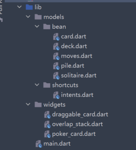
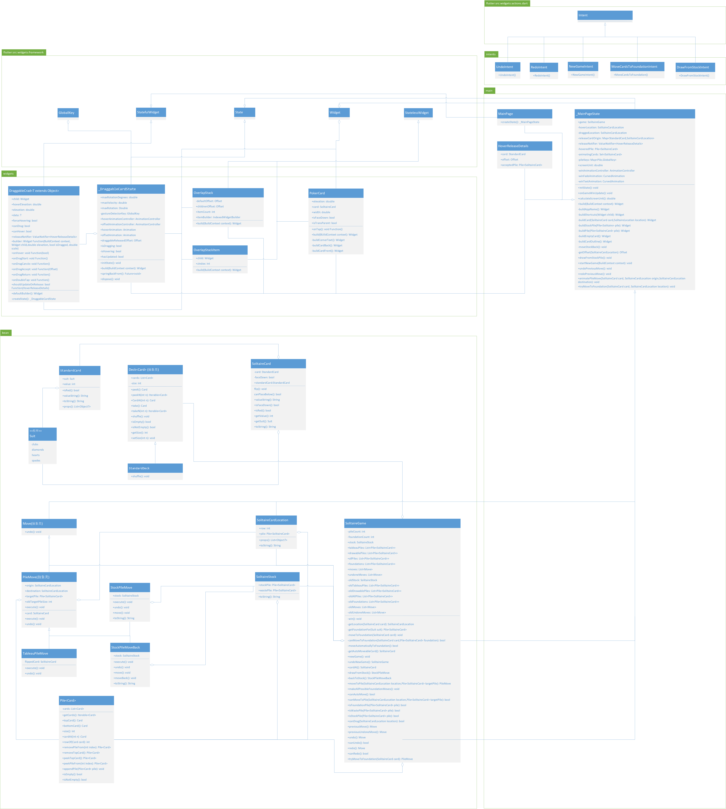

面向对象课程设计
面向对象课程设计分析与总结
代码结构
勉强算是MVC架构，但其实项目不大，纯代码只有2543行，所以谈架构并没有什么太大的意义。
老规矩，bean目录用于存放对象（实体类），shortcut包用于存放按键监听函数的注册，widgets用于存放自定义的widget，main.dart用于构建主界面与主界面逻辑。
UML
（虽然看起来dart文件不多但其实类还是很多，关系比较复杂）
代码/程序主要分为四部分，基本也是可以与上面的代码结构相对应：
- flutter框架部分（当然这部分不需要我们关心）
- 实体类部分
- 组件类部分
- 主程序部分
各部分代码的功能
实体类部分
主要负责程序中的实体类构建，包括卡牌（以及一整副牌）、各种牌堆、用户执行的操作以及这个游戏本身。
实体类的创建主要以建造者模式为导向，事实上这也是在构建实体类模块时常用的思想。我选择从最基本的元素开始抽象，灵活运用组合与继承，同时通过一定的装饰器模式思想，逐渐完成对整个游戏的抽象。
但其实存在一个小问题，SolitaireGame方法庞杂，逻辑众多，并不利于后期维护，我尽量通过函数名的自解释来解决这一问题。
组件类部分
相应的，组件类的构建也是以建造者模式的思想为引导，通过小组件逐步完成对整个游戏的构建。
这种组件式构建的主要好处就是能够通过子组件自己管理的build()以及必要的const标识，尽量减少不必要的界面重绘。尤其是，项目中涉及较多的StatefulWidget而并没有使用GetX+StatelessWidget的方案进行状态管理，所以尽可能的子组件抽离将对提高程序性能有更大的帮助。
而项目中涉及频繁卡牌拖拽、吸附、自动翻面、自动移动等动作及动画，如何高效完成状态的更新、保证动画流畅性、减少卡顿就会成为一大难题，而组件化或许就是答案之一。
主程序部分
由于程序只有一个界面，所以main.dart内存放了所有主界面代码，同时通过内部类的划分完成了主程序启动逻辑域与视图代码域的分离（这其实是flutter的特性/规定），从而保证程序在界面逻辑上的拓展性。
界面构建方面，依然主要采用安卓经典的LinearLayout思想，使用Row+Column，即左到右划分为不同的列，在每一列上再进行水平方向的划分，这样就能在保证了界面有序的同时也尽量兼顾了窗口缩放时不同元素的缩放问题。
另一方面，你可能会发现，按照线性布局的思想，组件之间不可能发生重叠，但界面中的卡牌组件却明显地发生了重叠。这是因为为了保证游戏界面符合常理，我在卡牌堆的界面构建（包括Stock和Tableau两种卡牌堆）上使用的是层叠布局，包括左下角的游戏标识，使用的也全是层叠布局。
同时，对于卡牌的定位，我选择通过坐标计算的方法，对于Tableau七个牌堆中的卡牌，通过获取其牌堆号与堆内序号，我们可以利用FinalOffset=BasicOffset+PileNum*TableauOffset.dx+RowNum*TableauOffset.dy来计算得出，这部分的逻辑主要由OverlapStack完成，这个类相当于牌堆数据的装饰器与牌堆的建造器，完成牌堆数据与牌堆组件的解耦，避免将复杂的定位逻辑耦合到牌堆组件的UI逻辑中，也避免将这部分逻辑放到数据或者实体类中导致其过于臃肿。
代码中的设计模式思想
代码中很频繁地使用了建造者模式的思想，上文已经说过。
代码中实现了do，undo，redo三个操作，主要由命令模式与备忘录模式结合，代码通过对Move对象的execure()方法和undo()方法及相应的存放每一步Move和被撤销的UndoneMove的列表的维护，并通过相应列表记录其原本位置，实现撤销与重做及其相应的动画。
代码中频繁使用了装饰器模式，比如游戏中卡牌的生成，首先我们创建StandardCard类，用于存放扑克牌的数据：花色和纸牌值。我们使用SolitaireCard装饰该类，赋予其Solitaire游戏中的一些必要判断如：翻面函数filp()、能否放在另一张牌上面canPlaceBlow(SolitaireCard card)等，最后我们使用PokerCard类作为最终装饰类装饰SolitaireCard，将其中的数据组装成卡片组件并提供相应的点击等逻辑。
同时装饰器模式在主界面逻辑中也有使用，我们执行每一次Move的execute()方法与undo()方法只是在数据上完成了执行与撤销，但我们也要完成卡片的移动的动画，我们在主界面逻辑中对这些函数进行装饰，并使用animatePileMove()方法统一完成动画的执行。
对于代码中快捷键绑定的逻辑，我参照访问者模式的思想，将作用于所有键盘事件的各元素的操作分离出来封装成独立的Intent类，从而保证职责单一性，也方便后期拓展。
最后，游戏中大部分时间始终只维护一个SolitaireGame对象，初期我选择参考单例模式，由SolitaireGame类自行创建单例对象并提供唯一访问节点，在进行新游戏时只需要将该对象执行初始化即可，但后期引入撤销与重做后发现这样会带来很多逻辑上的问题，如果玩家选择进行新游戏但随后选择撤销，那么在这个过程中，我需要记录两个游戏之间所有数据的不同并需要来回赋值，这些数据主要由两方面构成，一方面是UI层的数据，记录牌堆移动、位置、拖拽情况、所有牌的唯一键等状态的所有变量，另一部分是SolitaireGame本身的大量属性，这就导致完全割裂的两部分无法统一完成这两部分的来回更改。
初期我选择了一种较为简单的方法，即在UI逻辑中直接新建一个过渡的game对象并对原有对象进行替换，由新建的对象引导视图重建逻辑，这样在程序的大部分时间内仍然保持使用唯一的game对象，但这样做有一定的弊端，由于程序中维护的SolitaireGame对象是所有对象中体积最大、属性最多的对象，所以我们还是尽量避免其频烦新建，尤其是在频繁执行新游戏操作与撤销时，使用新建对象并随之弃用就会导致新建对象的性能损耗与大量垃圾对象的回收问题。
所以我选择了严格按照单例模式的策略，由SolitaireGame类自行创建单例对象并提供唯一访问节点，并提供newGame()与undoNewGame()方法，进行对象数据的更改，同时在主界面中分别用不同方法装饰这两个方法，完成UI层面的新游戏操作与撤销。从而减少了程序性能损耗，使得频繁执行开始新游戏与撤销操作时界面能稳定在40帧左右。
一些问题
首先是视图与逻辑耦合的问题，属于是flutter一直以来存在的问题，使用GetX可以在一定程度上解决这一问题，但会导致代码中的类文件变得比较冗杂。
另外，程序也存在些动画上的问题，比如Stock牌堆翻开的动画与撤销时的动画并不是可逆的，就导致撤销翻开时并没有动画进行过渡（因为flutter动画animation要求动画可以执行reverse()和forward()，也就是说，动画要求是可逆的，否则就属于不同的动画），另一方面，如果撤销对多张牌的移动，动画会出现底部的牌的位置瞬间复原而最顶部的牌执行动画的问题，这个问题暂时还没有解决方案，主要受到牌（堆）移动策略的限制。